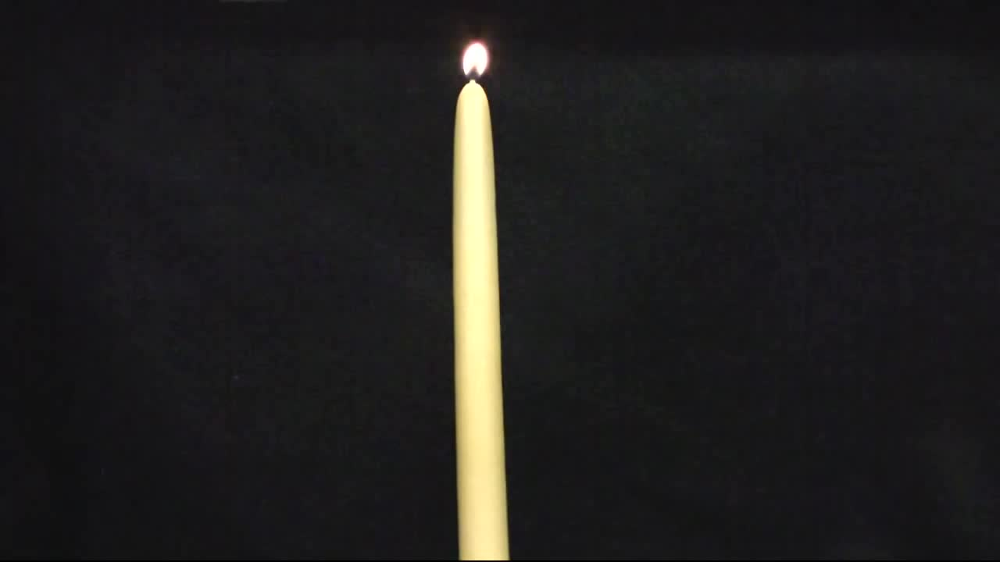

<html>
	<head>
		<title>Candlert</title>
		<style>
		#wrapper {
			margin: 0;
			padding: 0;
		}
		.marker {
			position: absolute;
			background-color: rgba(255, 0, 0, 0.1);
			width: 2px;
			z-index: 2;
		}
		#candle {
		    position: absolute;
		    top: 0;
		    left: 0;
		}
		</style>
	</head>
	<body>
		<div id="wrapper">
		<video id="candle" autoplay width="600" muted controls>
			<source src="candle-small.mp4" type="video/mp4">
		</video>
		<!--
		
		-->
		</div>

		<script src="./node_modules/tracking/build/tracking-min.js"></script>
		<script>

		var Flame = function() {
			this.x0 = null;
			this.x1 = null;
			this.y0 = null;
			this.y1 = null;
		}

		// Flame.prototype.grow(pixels, width, height, x, y) {

		// 	var val = pixels[(y * width) + x)];

		// 	if (val > 200) {
		// 		// Still part of the flame!

		// 		// Update the bounds
		// 		if (x < this.x0) {
		// 			this.x0 = x;
		// 		}
		// 		if (x > this.x1) {
		// 			this.x1 = x;
		// 		}

		// 		if (y < this.y0) {
		// 			this.y0 = y;
		// 		}
		// 		if (y > this.y1) {
		// 			this.y1 = y;
		// 		}

		// 		// Recurse through the other pixels...
		// 	}

		// }

		var CandleTracker = function(options) {

			options = options || {};
			this.flameCutoff = options.flameCutoff || 200;

			this.neighbours_ = {};

			CandleTracker.prototype.track = function(pixels, width, height) {

				// Convert to grayscale (for now?)
				var gray = tracking.Image.grayscale(pixels, width, height, false);

				// Start from the middle....
				var middle = Math.round(width / 2);

				// Start with an offset of 1
				var offset = 0;
				var x = middle;

				var flames = [];
				/*
					{
						top: xx,
						left: xx,
						right: xx
						bottom: xx
					}
				*/

				var flameRange = {
					min: 50,
					start: 200
				}

				while(x > 0 && x < width) {
					x = middle + offset;

					// #FFFFFB

					var start = null;

					for (var y = 0; y < height; y++) {
						var val = gray[((y * width) + x)];  // From 0 to 255 in grayscale

						if (start === null) {
							if (val > this.flameCutoff) {
								start = y;
							}
						} else {

							if (((y - start) / height) > 0.25) {
								// Anything that goes higher than 40% of the screen is probably not a flame?

								break; // Fast out...
							}
							if (val < 120 ) {
								// Flame has ended?
								// this._check(gray, width, height, x, y);

								var rect = document.createElement('div');
								rect.className = 'marker';
								rect.style.top = start + 'px';
								rect.style.left = x + 'px'
								rect.style.height = (y - start) + 'px';

								var wrapper = document.getElementById('wrapper');
								wrapper.appendChild(rect);
								break;
							}
						}

					}


					if (offset > 0) {
						offset++;
					} else {
						offset--;
					}
					offset *= -1;

				}
				return;

			}

			CandleTracker.prototype._check = function(pixels, width, height, x, y) {

				// Find the tip....
				var val = pixels[((y * width) + x)];


				var flame = {
					x0: x,
					y0: y,
					x1: x,
					y1: 0
				};

				// while(true) {
				// 	// Check the three pixels above this one

				// 	var offset = 0;

				// 	[0, -1, 1].forEach(function(i) {
				// 		val = pixels[(((flame.tip - 1) * width) + (x + i))];
				// 		if (val > this.flameCutoff) {
				// 			flame.tip = [(x + i), flame.tip - 1];
				// 		}
				// 	});

				// 	for (var i=-1;i<=1;i++) {
				// 		val = pixels[(((flame.tip - 1) * width) + (x + i))];
				// 		if (val > this.flameCutoff) {
				// 			flame.tip = [(x + i), flame.tip - 1];
				// 		}
				// 	}

				// }

			}
		}
		tracking.inherits(CandleTracker, tracking.Tracker);

		var myTracker = new CandleTracker({flameCutoff: 200});
		tracking.track('#candle', myTracker);
		</script>
	</body>
</html>